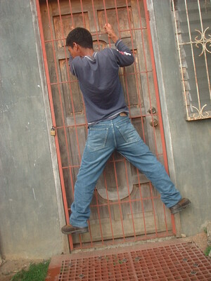

kepkep 
/kɔpkɔp/
v_rt.
1.
v.
for a person (egkepkep, migkepkep/inkepkep/pigkepkep, agent, eg><ø-) to cuddle someone (egkepkepan, migkepkepan/inkepkepan/pigkepkepan, location, eg><an-) in their arms
Eng. cuddle; hug; clutch
Online dict status: -
Usage level: F
2.
v.
for someone (egpakepkep, migpakepkep/impakepkep, agent, egpA-) to attach something (igpakepkep, impakepkep, theme, ig-pA-) on someone's body or something else (egpakepkepan, impakepkepann/migpakepkepan/pigpakepkepan, patient, egpA><an-)
Egpakepkep sikandin te bawì te palì din.
He is attaching medicine for his wound.
Tabakù ka igpakepkep ku te palì ku eyew mahaan egkeulii.
I will attach tabacco to my wound to be cure faster.
Egpakepkepan ku pad ka te me dewun te kayu ka peka ku su amana ne masakit.
I'll attach my back with some leaves of trees because it's painful.
Eng. attach; put up; stick
Tag. idikit
Ceb. ipapilit
Online dict status: -
Usage level: M
3.
adj.
(egkepkep_pad, eg><ø-) flat-chested (of a girl who has not yet developed breasts)
Eng. flat-chested; breastless; pre-pubescent
Online dict status: -
Usage level: M
Updated by: RJH,JLM,RJH,QDL,NJK,QDL
Last updated: 28/Jan/2010
"kepkep" in healthbook "Migpamawian ni Inuk ka sumbaley rin ne migpangaliskis"
This page last updated: 19/May/2012
Copyright © 2009-2010, Matigsalug Language Christian Association, Inc